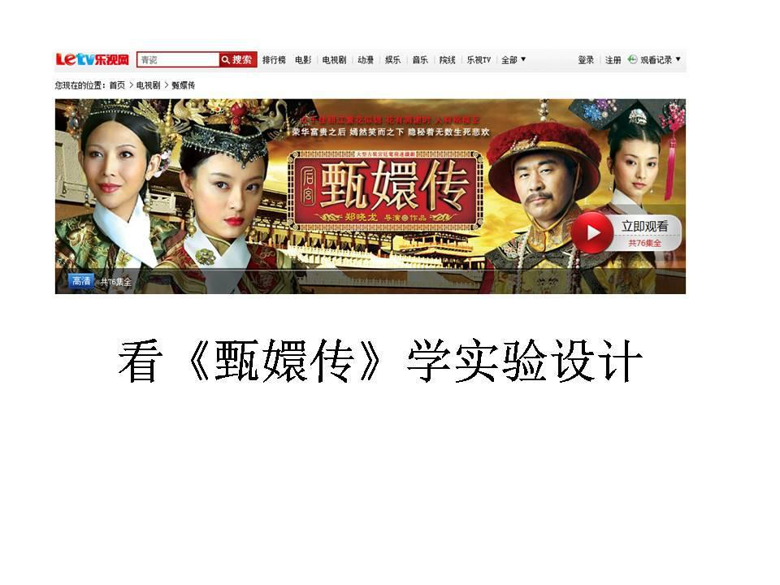
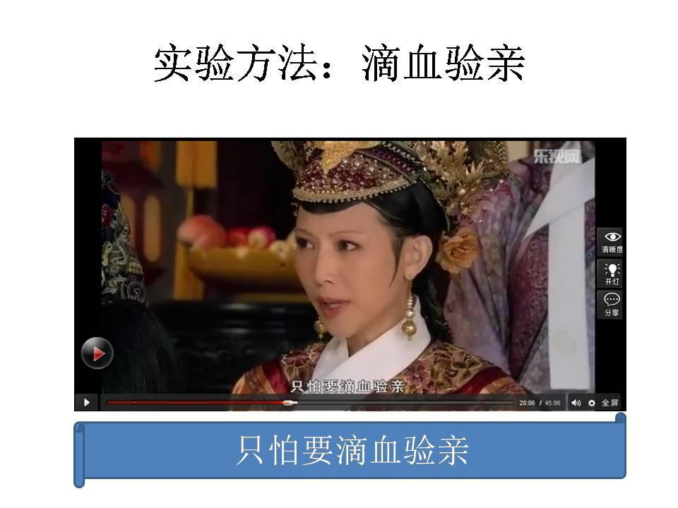

看《甄嬛传》学实验设计
这是以前发在果壳日志上的, 但果壳放弃了日志, 并且缺乏打理, 以至于原来的图片链接都出错了. 以为找不到了, 还挺可惜的. 今天查文件时突然发现了以前的图片, 还是放在自己这里踏实.
下面, 请扶稳坐好, 系好安全带, 我们一起看《甄嬛传》学实验设计:




注： 本文依照电视剧中的情节假定滴血验亲是可靠的。 续： 如果更加严格的实验设计还需要有很多的步骤。 比如：
- 实验器材中，用普通的水是不行的。需要用等渗等张的平衡盐作为溶液。
- 考虑到六阿哥的血比较宝贵，测量滴血验亲的敏感性和特异性的预实验是要提前完成的。
- 样本量的估计。
- 相融还是不相融看起来是个定性试验，还需要一个独立的读片人。
- 考虑到宫闱斗争重重，随机和双盲是必要的。
- 继续考虑宫闱斗争重重，实验样品的防伪与认证也是必要的，其中可能配合随机双盲要用到HASH算法和/或RSA加密。